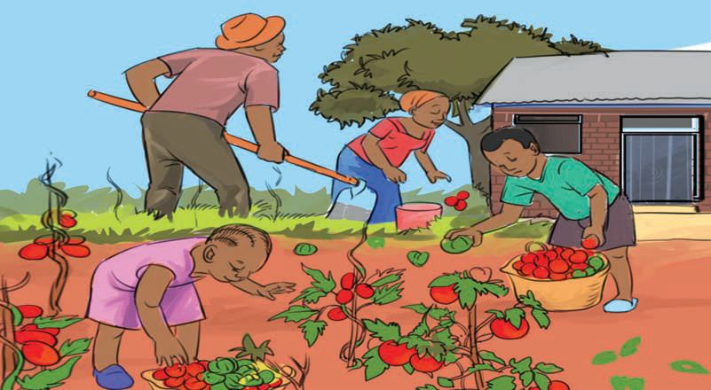

Wajibu wa mtoto nyumbani
Watoto wanatakiwa kutimiza wajibu wao wakiwa nyumbani ili kuwa na tabia za kimaadili.
Mambo unayopaswa kuyafanya nyumbani ili kuendana na taratibu na kanuni za kimaadili ni wajibu wako kama mtoto. Mfano wa wajibu wa mtoto nyumbani ni pamoja na:
(a)
Kuwaheshimu wazazi, walezi, watu waliokuzidi umri na watoto wenzako;
(b)
Kufanya kazi za nyumbani zinazolingana na umri wake;
(c)
Kuthamini mali zako binafsi na za nyumbani;
(d)
Kuepuka vitendo vya rushwa vinavyolenga kutenda vitendo vilivyo kinyume na maadili;
(e)
Kuwasaidia wazazi, walezi na watu waliokuzidi umri kufanya kazi kama inavyoonekana katika Kielelezo namba 4;

Kielelezo namba 4: Watoto wakifanya kazi kwenye bustani
Historia ya Tanzania na Maadili STD 3 PB Final.indd 49
29/11/2024 17:14